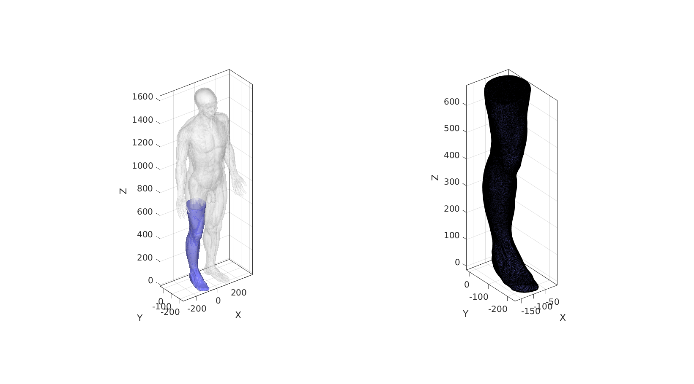

Contents
clear; close all; clc;
Description
This code processes the MAT file for the skin surface (found in the /mat folder), since it contains both the inner and outer skin surfaces. The inner surface is removed and the outer surface is processed to produce a single "water tight" mesh. The surface is also remeshed using ggremesh. The remeshed surface is exported to the /post folder.
This code requires the GIBBON MATLAB toolbox www.gibboncode.org
Plotting settings
lineWidth=0.5;
Control parameters
% Path names projectFolder = fileparts(fileparts(mfilename('fullpath'))); %Main code path loadFolder=fullfile(projectFolder,'data','BodyParts3D','mat'); %The MAT loading folder saveFolder=fullfile(projectFolder,'data','BodyParts3D','post'); %The MAT saving folder for processed data fileName_FMA='FMA7163'; saveNameMesh='skin_leg_right'; pointSpacing=4; cutHeight=675; saveOn=1;
fileName_mat=fullfile(loadFolder,[fileName_FMA,'.mat']);
model=load(fileName_mat);
F=model.faces;
V=model.vertices;
logicVertices=V(:,1)<0 & V(:,3)<=cutHeight+mean(patchEdgeLengths(F,V)); logicFaces=any(logicVertices(F),2); logicFaces=triSurfLogicSharpFix(F,logicFaces); Fs=F(logicFaces,:); [Fs,Vs]=patchCleanUnused(Fs,V); optionStruct.outputType='label'; [G,~,groupSize]=tesgroup(Fs,optionStruct); [~,indMax]=max(groupSize); logicKeep=G==indMax; Fs=Fs(logicKeep,:); [Fs,Vs]=patchCleanUnused(Fs,Vs); snapTolerance=mean(patchEdgeLengths(Fs,Vs))/100; n=vecnormalize([0 0 1]); %Normal direction to plane P=[0 0 cutHeight]; %Point on plane [Fc,Vc,~,logicSide]=triSurfSlice(Fs,Vs,[],P,n,snapTolerance); [Fc,Vc]=patchCleanUnused(Fc(logicSide,:),Vc);
Construct alpha shape
This deteriorates surface quality (bridges concave regions) but is a termporary "quick-and-dirty" work-around to obtain outer skin surface only.
shp = alphaShape(Vc,max(patchEdgeLengths(Fc,Vc)),'HoleThreshold',500,'RegionThreshold',1); [Fa,Va] = boundaryFacets(shp); %Get boundary faces of alpha shape [Fa,Va] = patchCleanUnused(Fa,Va); %Remove unused vertices
Remesh alpha shape using ggremesh
optionStructRemesh.pointSpacing=pointSpacing; %Set desired point spacing optionStructRemesh.disp_on=1; % Turn off command window text display [Fn,Vn]=ggremesh(Fa,Va,optionStructRemesh);
%%%%%%%%%%%%%%%%%%%%%%%%%%%%%%%%%%%%%%%%%%%%%%%%%%%%%%%%%%%%%%%%%%%%%%% ------> Geogram/vorpalite for resmeshing <------ 01-Sep-2021 17:42:02 # Export mesh input file. 01-Sep-2021 17:42:02 # Run Geomgram/vorpalite. 01-Sep-2021 17:42:02 ______________________________________________________________________________ | | | o-[config ] Configuration file name:geogram.ini | | Home directory:/root | | o-[I/O ] Output = /mnt/data/MATLAB/GIBBON/data/temp/temp_out.obj | | Loading file /mnt/data/MATLAB/GIBBON/data/temp/temp.obj... | | (FP64) nb_v:9054 nb_e:0 nb_f:18104 nb_b:0 tri:1 dim:3 | | Attributes on vertices: point[3] | | o-[Load ] Elapsed time: 0.01 s | ___________________________ _/ =====[preprocessing]===== \________________________________________________ | | | o-[CmdLine ] using pre:epsilon=0(0%) | | using pre:min_comp_area=9236.76(3%) | | o-[Components ] Nb connected components=1 | | Mesh does not have small connected component (good) | | o-[CmdLine ] using pre:max_hole_area=100 | | o-[Validate ] Mesh does not have 0-area facets (good) | | o-[CmdLine ] using pre:margin=0(0%) | | o-[Pre ] Elapsed time: 0.01 s | _______________________ _/ =====[remeshing]===== \____________________________________________________ | | ||| o-[Newton ] Elapsed time: 1.29s | | o-[Remesh ] Computing RVD... | | o-[Validate ] (FP64) nb_v:22222 nb_e:0 nb_f:44440 nb_b:0 tri:1 dim:3 | | Attributes on vertices: point[3] | | o-[Remesh ] Elapsed time: 1.64 s | ____________________________ _/ =====[postprocessing]===== \_______________________________________________ | | | o-[CmdLine ] using post:min_comp_area=9163.64(3%) | | o-[Components ] Nb connected components=1 | | Mesh does not have small connected component (good) | | o-[CmdLine ] using post:max_hole_area=100 | | using post:max_deg3_dist=0.754369(0.10000000000000001%) | | o-[Degree3 ] Does not have any degree 3 vertex (good) | | o-[Post ] Elapsed time: 0 s | ____________________ _/ =====[result]===== \_______________________________________________________ | | | o-[FinalMesh ] (FP64) nb_v:22222 nb_e:0 nb_f:44440 nb_b:0 tri:1 dim:3 | | Attributes on vertices: point[3] | | o-[I/O ] Saving file /mnt/data/MATLAB/GIBBON/data/temp/temp_out.obj. | | .. | | o-[Total time ] Elapsed time: 3.73 s | \______________________________________________________________________________/ # Importing remeshed geometry. 01-Sep-2021 17:42:06 # Removing temporary files. 01-Sep-2021 17:42:07 # Done! 01-Sep-2021 17:42:07
Visualisation
cFigure; subplot(1,2,1); hold on; gpatch(F,V,'w','none',0.25); gpatch(Fn,Vn,'bw','none'); axisGeom; camlight headlight; subplot(1,2,2); hold on; gpatch(Fn,Vn,'bw','k',1,lineWidth); axisGeom; camlight headlight; gdrawnow;
Store model in structure
modelNew.source=fileName_FMA; modelNew.faces=Fn; modelNew.vertices=Vn; modelNew.pointSpacing=pointSpacing; modelNew.cutHeight=cutHeight;
Save model
if saveOn==1 saveName_mat=fullfile(saveFolder,[saveNameMesh,'.mat']); save(saveName_mat,'-struct','modelNew') end
SimuLimb footer text
License: https://github.com/SimuLimb/simulateAmputation.m/blob/main/LICENSE Copyright (C) 2006-2021 Kevin Mattheus Moerman and the SimuLimb contributors
Licensed under the Apache License, Version 2.0 (the "License"); you may not use this file except in compliance with the License. You may obtain a copy of the License at
http://www.apache.org/licenses/LICENSE-2.0
Unless required by applicable law or agreed to in writing, software distributed under the License is distributed on an "AS IS" BASIS, WITHOUT WARRANTIES OR CONDITIONS OF ANY KIND, either express or implied. See the License for the specific language governing permissions and limitations under the License.